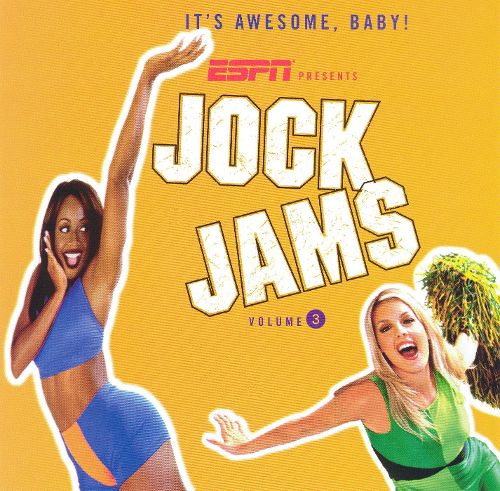

That's What I Call Jock Jams, Volume 3

Transitional albums can be a drag. Please to Meet Me ain't no Tim, Tusk is nowhere near as succesful as Rumours, and everyone knows that every Yes album is one big transition. But what do you make of the delightful Jock Jams series, a collection of 5 volumes that shamelessly existed with the sole purpose of blasting the boombox to get you into the groove after watching some good ol' American football (I guess the English like their fútbol so I'm trying to make compromises here). Arugably speaking, Jock Jams Volume 3 is a fierce competitior in a series that didn't miss a beat with its vast array of trashy Euro hits and witless hip hop jams.
In trying to determine how good these tracks really are, I thought it'd be just to rank these arena-pumping hits by how flavorful they truly, truly are. Numbers can't do these justice. So in the long tradition of classic finger food, I thought the only way to approach each awesome cut in here was to classify them by that oh-so-important ingredient that can make or break that exhilarating Sunday afternoon: chicken wing sauces.
...
1. Dick Vitale “It’s Awesome Baby”
Look, I don’t want to be the one who hates on Dick Vitale. The sports broadcaster is practically an American institution, and it’s really not his fault that each one of these compilations starts with some sort of ubiquitous catchphrase that reflects the core values of this country more than an All You Can Eat Salad Bar at Sizzler. But as far as quotes that are meant to get you into the spirit of the game, then “It’s Awesome Baby” is more so an endearing “aw shucks” remembrance of Vitale’s silly pre-game antics than a rousing fist-pumper. And besides, it’s really hard to top the indisputable champion of catchphrases, “Let’s Get Ready to Rumble”. Rank: Sweet and depandable BBQ sauce.
I immediately noticed that the producers of Jock Jams were reaching when “Tribal Dance” started playing on my headphones. Even if the Belgian mega project wrote some of the most absurdly garish tracks to ever grace the Billboard charts, it’s hard to contest that 2 Unlimited were unabashedly proud of their redundant techno pop. And really, “Tribal Dance” was like an enhanced “Get Ready for This” (featured on Volume 1) but with higher production values and one too many historically-innacurate waist-cloths. But really, I’m sure you didn’t remember that trumpet riff until I reminded you of it, when at least with “Ready for This” there’s that painful keyboard riff that will stick with you until you meet your fate after eating far too many cocktail shrimp. Still, credit where it’s due: if it weren’t for them I’m sure that the Eurovision song contest would only exist in Conchita Wurst’s most flamboyant dreams. And that’s something to be thankful for. Rank: Tangy orange-glazed.
My sister used to play this track so much, and though I grew tired of it back then because it wasn’t alt enough, I always had a secret love for it. Going back to it, I wouldn’t mind adding this one on my nineties grunge playlist tucked between "Pennyroyal Tea" and Eve Plum’s "I Want It All." But it still confounds me - did this one really inspire you to “Be like Mike"? The fact that it’s way, way up on the track list proves they felt quite confident on including this one. Didn’t they pay Garbage royalties for this one? And conversely, didn’t Hayley Williams steal Samantha Marie Sprackling’s look? Rank: Almond-crusted.
4. Tito Nieves “I Like It Like That”
This one’s personal. I’m honestly still aghast over who’s idea was it to mesh Conjunto Salsa with some generic four to the floor bear. And to be honest, I’m sure I gave my honorable patronage to Burger King back in the nineties, much to the chagrin of my parents, because those Whoppers really “got soul”. Look, I’m sure “I Like it Like That” is still a party anthem at that relative’s quinceañera who you’ve never even met, but back then this was the “party de marquesina” banger. And I can’t say that the memories are pleasant. Regardless of how you feel about Puerto Rico’s supposedly now-imminent statehood (cue sitcom laugh track), “I Like It Like That” definitely didn’t help the cause back in 1997. Rank: Watery tomato.
5. Quad City DJ’s “C’Mon N Ride It (The Train)”
Just when I thought that this was beginning to feel like some futile endeavor, Quad City DJ’s “C’Mon N Ride It (The Train)” started playing on my headphones and I couldn’t help but start humping my couch and raising my elbows up and down. Sure, it’s aged terribly, despite its wildly positive accolades back in the day, but that junkyard percussion and those blaring whistles are too imposing for one to ignore. I’m still a little troubled as to how it was probably inspired by the Little Engine that Could, but truthfully, it’s one on a long line of pop songs inspired by repressed childhood memories. For a second I started to genuinely believe that this could possibly be the best volume in the series. Rank: Original hot.
6. Let’s Go!
Oh, the Let’s Go! chant. I liked it more when the Ramones did it on "Do You Remember Rock N’ Roll Radio." Or was it "Blitzkrieg Bop?" Or was it both? Rank: Garlic parmesan.
I tend to have an aversion for songs that sound like the equivalent of fitness instructional videos. Props to Freak Nasty for writing their only top 40 to date. Emphasis to “to date”, as they’re apparently still trying to pursue another Hot 100-style winner. My main problem with their dance routine is that the dance move associated to it isn’t really that challenging to perform, so I’m not sure if you need to listen to it ad-nauseum for four minutes straight. Maybe it didn’t help that the accompanied video demonstrated its corresponding steps with a graphic of some stiff-looking robot when maybe it would’ve benefitted from the 2 Live Crew treatment. At first I thought I was going to be furiously annoyed by it but now I feel mildly compelled to try it out. Rank: Brackish teriyaki.
Oh, the poor man’s 2 Unlimited. Seriously, every Euro dance song back then sounded pretty much the same except for whatever artist was talented enough to write over a Casio medley. But I always had a soft spot for Jump! Not necessarily because of its screeching keyboard stabs, because there’s no denying how terribly basic they were, but because the track really gets pretty interesting when it changes things up to a reggae bridge that will have you pining for the days of Pato Banton. Bonus points for that foreboding “Let Me Hear It” vocal modulation, as it never fails to remind me of that Andrew Dice Clay sample on EMF’s “You’re Unbelievable.” Rank: Pickapeppa sauce.
9. Jock Jam Cheerleaders “R.O.W.D.I.E.”
(jumps and flails arms) R O W D I E. That’s the way we spell rowdie let’s get R O W D I E! Whoooo! Rank: Savoury cherry-glazed.
I’ll be honest. At first I was pulling my hair out because I remember hearing a rockier version of this song on some teen movie soundtrack that I can’t for the life of me remember. I also spent an inordinate amount of time on YouTube trying to figure out which was THE authentic “Jellyhead”, which was apparently sung by a pair of British teen actresses I’ve never heard of. But of course, the one that is actually featured on here is Motiv 8’s Pumphouse Remix, which just like “Da Dip”, sounds like it was meant for the sole reason of making some serious dollar through fitness license-ship agreements. But ten songs in and I’m still not even close to getting those sumptuous Billy Blanks pectorals. Point docked: I’d also like to think that this was a response to No Mercy’s “Where Do You Go,” which is unquestionably the worst song ever written. Rank: Seasoned maple-chipotle.
Unquestionably the best track in here by leagues. It was the song that ended Los del Rio’s “Macarena” almost-unbeatable streak on the Billboard Hot 100 and we should all be thankful for that. Looking at the rest of the tracklist here, I’m just wondering how this one track managed to make it into such a rubbish collection of songs, because it certainly wasn’t attributed to Bill Withers nostalgia, but I guess it was just that good. Rank: Fiery mango habanero.
12. The Jock Jams Cheerleaders “The Chant”
Seeing as there’s all these Jock Jam interludes, I wonder if Drake got inspired to base his 80 minute rambling mixtapes while listening to these when he was young? I guess I feel compelled to dilly dally because this one is by far the least memorable. Also, where did the cheerleaders go? Rank: Mild, very mild.
13. DJ Kool “Let Me Clear My Throat”
Ah, that unforgettable two-bar sax sample. It must’ve been pretty silly to even suggest this one on a professional studio with some artistic slant in mind. But what’s so great about “Let Me Clear My Throat” is how it just gets down to business and feeds itself from audience participation. And it’s hard to hate a song that references the likes of James Brown and Run DMC. Sure, it doesn’t articulate anything but getting the fans to scream, but isn’t that the point of a Jock Jam, anyhow? This one’s still fire. Rank: Atomic!
14. KC & The Sunshine Band “That’s the Way (I Like It)”
I fail to accept that “That’s the Way (I Like It)” counts as a Jock Jam. A soul train compilation? You betcha! But let’s not kid ourselves here - the quality and the production of this song is far more superior than most of this entire series combined, and we’re talking about some throwaway disco track that amounts to nothing more than horn dog sexual innuendo. You can’t get any lower, or any higher, than this. Rank: Miso-glazed.
Man, this one is just devoid of any personality whatsover. I kind of like that it references JJ Fad’s track of the same name, which is leagues more fun than this parroting snoozer. The drum sample also reminds me of pretty much every Luke and 2 Live Crew song, but I think that says more about me than the quality of the song. Rank: Plain ol' buffalo.
16. Funky Green Dogs “Fired Up!”
Think about Funky Green Dogs as the Beatles’ version of Paul McCartney’s Wings: a side project that is good enough but can’t just compare with the original. This Murk offshoot gets the job because it’s just a pure, no-frills house track. I’m not particularly too fond of it, especially since songs that reference a passion that “burns deep in my soul” make me think of fiery indigestion rather than getting it down with Sheila on the dancefloor. I’d encourage you to skip this one and go grab a copy of Murk’s singles collection if you can find it. Rank: Spicy and herby.
17. C+C Music Factory “Robi Rob’s Boriqua Anthem”
More like Robi-Rob’s Nuyorican anthem. I honestly don’t see any correlation to Puerto Rican culture whatsoever, and I should also point out that guest singer El General is from Panama. But that didn’t stop everyone back home: I remember listening to this track literally to death, and didn’t even know that it was titled as such until I started writing this feature just this week! But I think I’ve said this before: I have zero tolerance for songs that incorporate dance/Latin fusion with salsa elements. Now I’m just sad. Rank: Weak mojo criollo.
18. Livin’ Joy - "Don’t Stop Movin’"
Oh, boy. I know this one well but I always thought that it was Crystal Waters. Props to Tameka Starr for passionately stretching out those pipes to this wholly inspirational cheer on persevering. But if it weren’t for her, it’s just another run-of-the-mill Eurodance track that is doing an outstanding job at testing my patience. Rank: Cilantro-lime.
19. Jock Jams Cheerleaders! “Don’t Stop! Get It! Get It!”
One more cheer for the homestretch… Rank: Hickory Smoked BBQ.
I feel like this one in particular has been going through something of a renaissance as of late, because apparently milllenials seem to miss the irony behind it and rank it up there with the likes of Space Jam and Tommy Hilfiger branded gear. So for my own sanity’s sake, I’m going to do my utmost best to discredit it because it really is that bad. Frankly, I hadn’t heard past the first 30 seconds in years, as I’m sure no one here reading this has, because if you fast forward it it essentially is a 5 second loop roll meant for You Tube LOL’s except for some tacked-in banjo and the shrill voice of some female singer I can’t bother to take a few seconds to look up. I wonder what the Swedes think about exporting this one, though I’m sure they feel prouder about Rednex than they do about Ingmar Bergman. Rank: Sharp créme faiche.
21. Jock Jam
I seriously don’t have the patience for this anymore. This is like some obnoxious mega remix of multiple songs featured on the series. Once “Jock Jam” plays, you know that the party is over. It’s just a tacked-on throwaway for those who are apparently either too drunk to stand up, or not drunk enough to realize they’ve wasted too much of their lives going to “Jock Jam” endorsed parties. It’s a dumbfounding choice - maybe this was the last hurrah, one more fist-pumping, booty-shaking three minutes of what was eventually to be a dying tradition. An art form that the series producers knew they had to kill before it reached its eventual demise two years later. Never to be seen again. But little did we know that Savage Garden was just around the corner. Rank: stale Louisiana rub.
22. Ray Castoldi “The Chicken Dance”
No. Just…no. Rank: I've had enough.
...
So there you have it. I've had more sauces that I can count to dip my wings in. Do you have any particular favorites from this collection, or is there a Jock Jam in the entire series that rocks your world? You can always reach us on facebook, or on our official twitter page.
1 April, 2017 - 04:41 — Juan Edgardo Rodriguez